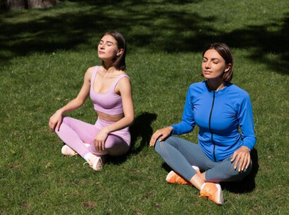

01
Cultivating Academic Leaders
A new generation of faculty and academic leaders equipped to integrate theory & practice and drive pedagogical innovation and institutional transformation.
We bring together scholars, practitioners, and institutions to foster innovation in teaching, research, and leadership for a more connected and sustainable world.
Higher education is evolving. IIFR was established to address critical gaps and create a future-ready ecosystem for faculty, research, and leadership development.
Bridge the gap between academia and industry.
Advance innovation in research and practice.
Develop leaders who can navigate complex global challenges.
Build a collaborative global network for impact and influence.
To advance education and professional practice through scholarship, collaboration, and impact.
To realise our vision, IIFR is committed to four enduring priorities.
A new generation of faculty and academic leaders equipped to integrate theory & practice and drive pedagogical innovation and institutional transformation.
Interdisciplinary applied research that transcends boundaries to solve complex real-world challenges and shape global policy.
Pracademics — scholar-practitioners who navigate and influence the fluid intersection of classroom, boardroom, and government.
A high-impact global network that fosters seamless collaboration between the world's leading scholars and industry practitioners.
The Executive Board provides strategic oversight, institutional stewardship, and long-term leadership to guide IIFR's growth, governance, and strategic priorities.
Setting the direction and stewarding the institute's long-term mission.
Bringing strategic perspective across academia, industry, and policy.
The Academic Council is central to IIFR's vision, offering strategic guidance on academic excellence, research priorities, and long-term institutional development. Click any member to view their profile.
A glimpse of campus, cohorts, faculty engagement, and convocation at the BVB Delhi campus.

A network of partners advancing faculty development, research, and academic transformation.
One of India's foremost institutions shaping education and society for nearly nine decades — the home and host institution for IIFR.
Learn more →
A global association fostering excellence in management development through accreditation, research, and collaboration.
Learn more →Empowering institutions with innovative solutions for learning, research, and academic transformation.
Learn more →Partner, learn, collaborate, and lead transformation with IIFR.
.jpg)